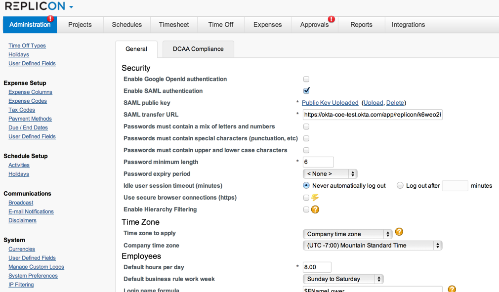

Sign in to Replicon as a user with rights to edit the SAML configuration.
On the left navigation menu, click on System Preferences under System. You will see SAML configuration settings on the right under Security.
Enable SAML authentication.
Download the SAML public key then upload it in the SAML Public Key field.
Sign in to the Okta Admin app to generate this variable.Fill in the SAML Transfer URL field with the following information:
Sign in to the Okta Admin app to generate this variable.